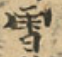
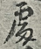
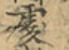
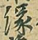
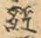
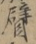

| 1 | 匝 | - 迊(text)[1]
| - 迊(text)[1]
| 完全相同(100%) |
| 2 | 盈 | - #A02738-013(g)[2]
| - #A02738-013(g)[2]
| 完全相同(100%) |
| 3 | 淨 | - 浄(text)[4]
| - 浄(text)[4]
| 完全相同(100%) |
| 4 | 鼓 | - #A04786-010(g)[2]
| - #A04786-010(g)[1]
| 完全相同(100%) |
| 5 | 醜 | - #A04247-012(g)[5]
| - #A04247-012(g)[3]
| 完全相同(100%) |
| 6 | 舍 | - 舎(text)[2]
| - 舎(text)[3]
| 完全相同(100%) |
| 7 | 號 | - #A03612-046(g)[3]
- 号(text)[1]
| - 号(text)[4]
- #A03612-046(g)[1]
| 完全相同(100%) |
| 8 | 願 | - #S3491v-145-04(g)[8]
| - #S3491v-145-04(g)[13]
| 完全相同(100%) |
| 9 | 黃 | - 黄(text)[2]
| - 黄(text)[6]
| 完全相同(100%) |
| 10 | 檑 | - 櫑(text)[2]
| - 櫑(text)[1]
| 完全相同(100%) |
| 11 | 孽 | - #S3491v-195-05(g)[1]
| - #S3491v-195-05(g)[1]
| 完全相同(100%) |
| 12 | 舉 | - #S3491v-053-08(g)[2]
| - #S3491v-053-08(g)[2]
| 完全相同(100%) |
| 13 | 帥 | - #A01174-005(g)[2]
| - #A01174-005(g)[2]
| 完全相同(100%) |
| 14 | 觀 | - #A03776-043-1(g)[2]
| - #A03776-043-1(g)[2]
| 完全相同(100%) |
| 15 | 辯 | - #A04108-008(g)[1]
| - #A04108-008(g)[1]
| 完全相同(100%) |
| 16 | 晨 | - #A01803-003(g)[1]
| - #A01803-003(g)[1]
| 完全相同(100%) |
| 17 | 橫 | - #A02022-009(g)[1]
| - #A02022-009(g)[1]
| 完全相同(100%) |
| 18 | 灰 | - #A02384-001(g)[1]
| - #A02384-001(g)[1]
| 完全相同(100%) |
| 19 | 檀 | - #A02032-009(g)[1]
| - #A02032-009(g)[1]
| 完全相同(100%) |
| 20 | 落 | - #A03520-001(g)[2]
- #F101-020-09(g)[2]
| - #F101-020-09(g)[1]
- #A03520-001(g)[2]
| 完全相同(100%) |
| 21 | 佛 | - 仏(text)[11]
- #P2999-008-04(g)[10]
| - #P2999-008-04(g)[17]
- 仏(text)[1]
| 完全相同(100%) |
| 22 | 腳 | - 脚(text)[2]
| - 脚(text)[2]
| 完全相同(100%) |
| 23 | 吉 | - 𠮷(text)[1]
| - 𠮷(text)[2]
| 完全相同(100%) |
| 24 | 棄 | - 弃(text)[3]
| - 弃(text)[2]
| 完全相同(100%) |
| 25 | 土 | - 圡(text)[1]
| - 圡(text)[5]
| 完全相同(100%) |
| 26 | 致 | - #A03390-016(g)[1]
| - #A03390-016(g)[3]
| 完全相同(100%) |
| 27 | 腰 | - #P2999-079-15(g)[1]
| - #P2999-079-15(g)[3]
| 完全相同(100%) |
| 28 | 惱 | - 𢙉(text)[8]
| - 𢙉(text)[5]
| 完全相同(100%) |
| 29 | 豈 | - #A03906-001(g)
 [3] [3]
| - #A03906-001(g)[2]
| 完全相同(100%) |
| 30 | 奏 | - #P2999-033-12(g)[1]
| - #P2999-033-12(g)[1]
| 完全相同(100%) |
| 31 | 於 | - #A01760-014(g)[14]
| - #A01760-014(g)[25]
| 完全相同(100%) |
| 32 | 花 | - #A03439-010-1(g)[10]
| - #A03439-010-1(g)[7]
| 完全相同(100%) |
| 33 | 靆 | - #S3491v-098-18(g)[2]
| - #S3491v-098-18(g)[2]
| 完全相同(100%) |
| 34 | 鞭 | - #A04521-006(g)[1]
| - #A04521-006(g)[1]
| 完全相同(100%) |
| 35 | 騁 | - #A04637-001(g)[4]
| - #A04637-001(g)[2]
| 完全相同(100%) |
| 36 | 泥 | - #A02161-009(g)[1]
| - #A02161-009(g)[1]
| 完全相同(100%) |
| 37 | 微 | - #A01300-008(g)[1]
| - #A01300-008(g)[1]
| 完全相同(100%) |
| 38 | 魔 | - #A04689-004(g)
 [30] [30]
| - #A04689-004(g)[23]
| 完全相同(100%) |
| 39 | 若 | - 𠰥(text)[4]
| - 𠰥(text)[3]
| 完全相同(100%) |
| 40 | 寂 | - #A01035-020(g)[1]
| - #A01035-020(g)[1]
| 完全相同(100%) |
| 41 | 髭 | - #A04672-009-1(g)
 [1] [1]
| - #A04672-009-1(g)[1]
| 完全相同(100%) |
| 42 | 明 | - 眀(text)[1]
| - 眀(text)[1]
| 完全相同(100%) |
| 43 | 藏 | - #A03579-010(g)[1]
| - #A03579-010(g)[1]
| 完全相同(100%) |
| 44 | 免 | - #A00275-004(g)[1]
- #A00275-009(g)[1]
| - #A00275-004(g)[2]
- #A00275-009(g)[1]
| 完全相同(100%) |
| 45 | 慚 | - 慙(text)[2]
| - 慙(text)[1]
| 完全相同(100%) |
| 46 | 事 | - #A00048-008(g)[7]
| - #A00048-008(g)[6]
| 完全相同(100%) |
| 47 | 直 | - #A02759-012(g)[3]
| - #A02759-012(g)[7]
| 完全相同(100%) |
| 48 | 訊 | - #A03790-012(g)[1]
| - #A03790-012(g)[1]
| 完全相同(100%) |
| 49 | 虞 | - #A03611-007(g)[1]
| - #A03611-007(g)[1]
| 完全相同(100%) |
| 50 | 空 | - 𫞹(text)[7]
| - 𫞹(text)[5]
| 完全相同(100%) |
| 51 | 參 | - #A00467-005(g)[1]
| - #A00467-005(g)[1]
| 完全相同(100%) |
| 52 | 兒 | - 𧠇(text)[2]
| - 𧠇(text)[2]
| 完全相同(100%) |
| 53 | 屍 | - #A01088-001(g)[1]
| - #A01088-001(g)[1]
| 完全相同(100%) |
| 54 | 照 | - #A02424-011(g)[2]
| - #A02424-011(g)[2]
| 完全相同(100%) |
| 55 | 定 | - 㝎(text)[4]
| - 㝎(text)[3]
| 完全相同(100%) |
| 56 | 捨 | - #A01613-001(g)[8]
| - #A01613-001(g)[4]
| 完全相同(100%) |
| 57 | 虛 | - #A03609-022(g)[2]
| - #A03609-022(g)[4]
| 完全相同(100%) |
| 58 | 戟 | - #S3491v-083-16(g)[2]
| - #S3491v-083-16(g)[2]
| 完全相同(100%) |
| 59 | 勸 | - #A00404-010(g)[2]
| - #A00404-010(g)[1]
| 完全相同(100%) |
| 60 | 煙 | - #A02420-010(g)[2]
| - #A02420-010(g)[4]
| 完全相同(100%) |
| 61 | 吐 | - #A00503-001(g)[2]
| - #A00503-001(g)[2]
| 完全相同(100%) |
| 62 | 辰 | - #A04109-006(g)[1]
| - #A04109-006(g)[1]
| 完全相同(100%) |
| 63 | 眉 | - #A02763-006(g)[3]
| - #A02763-006(g)[3]
| 完全相同(100%) |
| 64 | 深 | - #A02243-015(g)[2]
| - #A02243-015(g)[4]
| 完全相同(100%) |
| 65 | 梳 | - #A01919-005(g)[1]
| - #A01919-005(g)[1]
| 完全相同(100%) |
| 66 | 卑 | - #P2187-093-28(g)[2]
| - #P2187-093-28(g)[2]
| 完全相同(100%) |
| 67 | 寶 | - 寳(text)[3]
| - 寳(text)[4]
| 完全相同(100%) |
| 68 | 戈 | - #S3491v-113-07(g)
 [3] [3]
| - #S3491v-113-07(g)[2]
| 完全相同(100%) |
| 69 | 腮 | - 顋(text)[3]
| - 顋(text)[2]
| 完全相同(100%) |
| 70 | 已 | - 巳(text)[2]
| - 巳(text)[4]
| 完全相同(100%) |
| 71 | 來 | - 来(text)[36]
| - 来(text)[33]
| 完全相同(100%) |
| 72 | 穀 | - #A02940-009(g)
 [1] [1]
| - #A02940-009(g)[1]
| 完全相同(100%) |
| 73 | 愧 | - #A01414-003(g)[1]
| - #A01414-003(g)[1]
| 完全相同(100%) |
| 74 | 器 | - #F252-066-13(g)[1]
| - #F252-066-13(g)[2]
| 完全相同(100%) |
| 75 | 養 | - #A04597-006(g)[2]
| - #A04597-006(g)[1]
| 完全相同(100%) |
| 76 | 絲 | - 𢇁(text)[1]
| - 𢇁(text)[1]
| 完全相同(100%) |
| 77 | 忿 | - #A01319-001(g)[2]
| - #A01319-001(g)[2]
| 完全相同(100%) |
| 78 | 幼 | - 㓜(text)[1]
| - 㓜(text)[1]
| 完全相同(100%) |
| 79 | 響 | - #A04535-016(g)[1]
| - #A04535-016(g)[1]
| 完全相同(100%) |
| 80 | 氏 | - #A02108-002(g)[1]
| - #A02108-002(g)[1]
| 完全相同(100%) |
| 81 | 蠶 | - 蝅(text)[1]
| - 蝅(text)[1]
| 完全相同(100%) |
| 82 | 睹 | - 覩(text)[1]
| - 覩(text)[2]
| 完全相同(100%) |
| 83 | 震 | - #A04479-002(g)[2]
| - #A04479-002(g)[4]
| 完全相同(100%) |
| 84 | 黑 | - 黒(text)[4]
| - 黒(text)[3]
| 完全相同(100%) |
| 85 | 珍 | - 珎(text)[1]
| - 珎(text)[1]
| 完全相同(100%) |
| 86 | 隨 | - 随(text)[3]
| - 随(text)[6]
| 完全相同(100%) |
| 87 | 等 | - 䒭(text)[4]
| - 䒭(text)[4]
| 完全相同(100%) |
| 88 | 妖 | - #A00893-002(g)[2]
| - #A00893-002(g)[1]
| 完全相同(100%) |
| 89 | 繭 | - #S3491v-053-02(g)[1]
| - #S3491v-053-02(g)[1]
| 完全相同(100%) |
| 90 | 逡 | - #S3491v-079-06(g)[1]
| - #S3491v-079-06(g)[1]
| 完全相同(100%) |
| 91 | 蹤 | - #S3491v-128-21(g)
 [1] [1]
| - #S3491v-128-21(g)[1]
| 完全相同(100%) |
| 92 | 競 | - #A02983-017(g)[2]
| - #A02983-017(g)[2]
| 完全相同(100%) |
| 93 | 箸 | - 筯(text)[1]
| - 筯(text)[1]
| 完全相同(100%) |
| 94 | 魅 | - #A04686-073(g)[1]
| - #A04686-073(g)[1]
| 完全相同(100%) |
| 95 | 憐 | - #A01435-007(g)[1]
| - #A01435-007(g)[1]
| 完全相同(100%) |
| 96 | 安 | - #A01009-002(g)[2]
| - #A01009-002(g)[2]
| 完全相同(100%) |
| 97 | 悉 | - 𢘻(text)[1]
| - 𢘻(text)[1]
| 完全相同(100%) |
| 98 | 死 | - #A02077-009(g)[3]
| - #A02077-009(g)[6]
| 完全相同(100%) |
| 99 | 海 | - #A02205-004(g)[3]
| - #A02205-004(g)[5]
| 完全相同(100%) |
| 100 | 結 | - #A03115-001(g)[3]
| - #A03115-001(g)[1]
| 完全相同(100%) |
| 101 | 揮 | - 撝(text)[1]
| - 撝(text)[1]
| 完全相同(100%) |
| 102 | 傳 | - #A00228-006(g)[1]
| - #A00228-006(g)[5]
| 完全相同(100%) |
| 103 | 啟 | - #P2324-148-08(g)[2]
| - #P2324-148-08(g)[1]
| 完全相同(100%) |
| 104 | 鬼 | - #A04683-004(g)[9]
| - #A04683-004(g)[9]
| 完全相同(100%) |
| 105 | 遊 | - 逰(text)[1]
| - 逰(text)[1]
| 完全相同(100%) |
| 106 | 奇 | - 竒(text)[2]
| - 竒(text)[1]
| 完全相同(100%) |
| 107 | 綺 | - #A03139-001(g)[3]
| - #A03139-001(g)[3]
| 完全相同(100%) |
| 108 | 促 | - #A00156-002(g)[2]
| - #A00156-002(g)[1]
| 完全相同(100%) |
| 109 | 或 | - 㦯(text)[3]
| - 㦯(text)[2]
| 完全相同(100%) |
| 110 | 豔 | - 艶(text)[1]
| - 艶(text)[1]
| 完全相同(100%) |
| 111 | 英 | - 𦮥(text)[2]
| - 𦮥(text)[1]
| 完全相同(100%) |
| 112 | 謾 | - #B04727-006(g)[3]
| - #B04727-006(g)[2]
| 完全相同(100%) |
| 113 | 障 | - #A04441-003(g)[4]
| - #A04441-003(g)[1]
| 完全相同(100%) |
| 114 | 分 | - #A00331-001(g)[4]
| - #A00331-001(g)[6]
| 完全相同(100%) |
| 115 | 聰 | - 聡(text)[1]
| - 聡(text)[2]
| 完全相同(100%) |
| 116 | 卻 | - 却(text)[19]
| - 却(text)[9]
| 完全相同(100%) |
| 117 | 斷 | - 断(text)[4]
| - 断(text)[3]
| 完全相同(100%) |
| 118 | 高 | - 髙(text)[1]
| - 髙(text)[3]
| 完全相同(100%) |
| 119 | 美 | - #A03218-008(g)
 [3] [3]
| - #A03218-008(g)[5]
| 完全相同(100%) |
| 120 | 遍 | - #A04168-005(g)[2]
| - #A04168-005(g)[1]
| 完全相同(100%) |
| 121 | 色 | - #A03427-016(g)[4]
| - #A03427-016(g)[3]
| 完全相同(100%) |
| 122 | 煞 | - #A02430-004(g)[1]
| - #A02430-004(g)[1]
| 完全相同(100%) |
| 123 | 覓 | - 覔(text)[1]
| - 覔(text)[1]
| 完全相同(100%) |
| 124 | 驅 | - 駈(text)[4]
| - 駈(text)[4]
| 完全相同(100%) |
| 125 | 尊 | - #A01064-009(g)[3]
- #A01064-002-1(g)
 [1] [1]
| - #A01064-009(g)[1]
- #A01064-002-1(g)[1]
- #A01064-018(g)[6]
- #A01064-010(g)[7]
| 部分相同 |
| 126 | 整 | - #A01740-012(g)[1]
| - #A01740-003(g)[1]
- #A01740-012(g)[2]
| 部分相同 |
| 127 | 齊 | - 斊(text)[2]
- #S3491v-144-14(g)[1]
| - 斊(text)[2]
| 部分相同 |
| 128 | 鬧 | - 𠆴(text)[1]
- 閙(text)[1]
| - 閙(text)[1]
| 部分相同 |
| 129 | 留 | - #A02645-015(g)[1]
- 㽞(text)[1]
| - 㽞(text)[1]
| 部分相同 |
| 130 | 胸 | - #S3491v-189-02(g)[1]
- #A03326-017(g)[1]
| - #A03326-017(g)[2]
| 部分相同 |
| 131 | 苦 | - #A03448-009(g)[5]
| - #P2204-024-11(g)[5]
- #A03448-009(g)[1]
| 部分相同 |
| 132 | 此 | - #A02068-010(g)[2]
- #A02068-006(g)[5]
| - #A02068-006(g)[6]
| 部分相同 |
| 133 | 萬 | - 万(text)[4]
| - 万(text)[9]
- #P2187-115-26(g)[1]
| 部分相同 |
| 134 | 亂 | - #S3491v-077-17(g)[1]
- 乱(text)[4]
| - 乱(text)[4]
| 部分相同 |
| 135 | 奢 | - #S3491v-136-11(g)[1]
- #P2187-036-17(g)[1]
| - #P2187-036-17(g)[1]
| 部分相同 |
| 136 | 雙 | - #A04463-003(g)[5]
| - #A04463-011(g)[2]
- #A04463-003(g)[1]
| 部分相同 |
| 137 | 誇 | - #A03820-004(g)[3]
- #A03820-005(g)[2]
| - #A03820-004(g)[2]
| 部分相同 |
| 138 | 雷 | - #S3491v-118-15(g)[1]
- #F252-038-13(g)[1]
| - #F252-038-13(g)[2]
| 部分相同 |
| 139 | 過 | - #P2999-001-13(g)[5]
| - #P2999-001-13(g)[1]
- #P2187-102-07(g)[1]
| 部分相同 |
| 140 | 滅 | - #S3491v-080-19(g)[1]
- #P2187-075-16(g)[1]
| - #P2187-075-16(g)[1]
| 部分相同 |
| 141 | 與 | - #B00005-001(g)[4]
| - #B00005-001(g)[3]
- 与(text)[1]
| 部分相同 |
| 142 | 葉 | - 𦯧(text)[2]
- #A03525-009(g)[2]
| - 𦯧(text)[2]
| 部分相同 |
| 143 | 雹 | - #S3491v-119-01(g)[1]
- #S3491v-125-08(g)[1]
| - #S3491v-125-08(g)[1]
| 部分相同 |
| 144 | 裡 | - #P3375v-018-05(g)[3]
- #A03732-010(g)[4]
| - #A03732-010(g)[5]
| 部分相同 |
| 145 | 召 | - 𠮥(text)[1]
- 𠮦(text)[1]
| - 𠮦(text)[2]
| 部分相同 |
| 146 | 別 | - #A00339-009-1(g)[1]
- 别(text)[1]
| - 别(text)[2]
| 部分相同 |
| 147 | 雪 | - #S3491v-062-18(g)[2]
- #A04469-012(g)[2]
| - #A04469-012(g)[2]
| 部分相同 |
| 148 | 爭 | - 争(text)[3]
- #A02468-008(g)[2]
| - 争(text)[3]
| 部分相同 |
| 149 | 潑 | - #S3491v-107-01(g)[1]
| - #P2187-047-02(g)[1]
- #S3491v-107-01(g)[1]
| 部分相同 |
| 150 | 雨 | - #A04468-007(g)[1]
| - #A04468-007(g)[2]
- #A04468-012(g)[1]
| 部分相同 |
| 151 | 沈 | - #A02140-006(g)[1]
- #P2187-058-08(g)[1]
| - #P2187-058-08(g)[2]
| 部分相同 |
| 152 | 個 | - 箇(text)[3]
| - 箇(text)[3]
- 个(text)[1]
| 部分相同 |
| 153 | 沒 | - #S3491v-050-08(g)[2]
- 𣳚(text)[2]
| - 𣳚(text)[5]
| 部分相同 |
| 154 | 搖 | - 揺(text)[2]
| - 揺(text)[2]
- #P2187-045-22(g)[1]
| 部分相同 |
| 155 | 擊 | - #A01690-013-1(g)[2]
| - #A01690-013-1(g)[1]
- #P2187-038-11(g)[1]
| 部分相同 |
| 156 | 嫌 | - #S3491v-171-09(g)
 [1] [1]
| - #S3491v-171-09(g)[1]
- #A00956-002(g)[1]
| 部分相同 |
| 157 | 圓 | - 圎(text)[3]
| - 圎(text)[2]
- #P2187-029-27(g)
 [1] [1]
| 部分相同 |
| 158 | 從 | - 従(text)[4]
- #A01293-010(g)[4]
| - #A01293-010(g)[6]
| 部分相同 |
| 159 | 殘 | - #S3491v-108-12(g)[1]
- #A02083-003(g)[1]
| - #A02083-003(g)[1]
| 部分相同 |
| 160 | 顏 | - #A04560-017(g)[1]
- #A04560-007(g)[1]
| - #A04560-007(g)[2]
| 部分相同 |
| 161 | 驚 | - #A04650-002(g)[1]
- #S3491v-125-15(g)[1]
| - #A04650-002(g)[3]
| 部分相同 |
| 162 | 貌 | - 㒵(text)[7]
| - #A03925-005(g)
 [1] [1] - 㒵(text)[5]
| 部分相同 |
| 163 | 點 | - #A04775-003(g)[2]
- #S3491v-079-09(g)[2]
| - #A04775-003(g)[3]
| 部分相同 |
| 164 | 成 | - #A01471-014(g)[6]
| - #A01471-013(g)[4]
- #A01471-014(g)[2]
| 部分相同 |
| 165 | 兩 | - #A04468-015(g)[2]
| - #A04468-007(g)[2]
- #A04468-015(g)[1]
| 部分相同 |
| 166 | 看 | - #S3491v-054-15(g)[2]
- #S3491v-061-06(g)[1]
- #A02764-005(g)[3]
| - #A02764-005(g)[5]
| 部分相同 |
| 167 | 劍 | - #S3491v-086-05(g)[1]
- 劒(text)[3]
| - 劒(text)[3]
- #P2187-059-04(g)
 [1] [1]
| 部分相同 |
| 168 | 雲 | - 云(text)[1]
- #S3491v-110-10(g)[1]
- #A04471-015(g)[1]
| - #A04471-015(g)[7]
| 部分相同 |
| 169 | 乾 | - #A00044-007(g)[1]
- #A00044-023(g)[1]
| - 乹(text)[1]
- #A00044-007(g)[1]
| 部分相同 |
| 170 | 知 | - #A02818-012(g)[1]
- #P2999-107-08(g)[6]
| - #P2999-107-08(g)[1]
- #A02818-006(g)[1]
| 部分相同 |
| 171 | 師 | - #S3491v-089-05(g)[1]
- 师(text)[1]
| - #A01174-005(g)[2]
- 师(text)[1]
| 部分相同 |
| 172 | 降 | - #A04414-021(g)[2]
- #S3491v-113-01(g)[1]
- #A04414-015(g)[1]
| - #A04414-021(g)[3]
| 部分相同 |
| 173 | 風 | - #P2187-047-23(g)
 [4] [4] - #S3491v-119-12(g)[1]
- #S3491v-150-06(g)[1]
| - #P2187-047-23(g)[3]
| 部分相同 |
| 174 | 再 | - #A00298-006-1(g)[2]
| - #A00298-008(g)[2]
- #A00298-009(g)
 [1] [1] - #A00298-006-1(g)[1]
| 部分相同 |
| 175 | 嬌 | - #P2187-104-06(g)
 [2] [2] - #S3491v-193-12(g)
 [2] [2]
| - #A00974-001(g)
 [1] [1] - #P2187-104-06(g)[1]
| 部分相同 |
| 176 | 擬 | - #P2305-041-04(g)[1]
- #S3491v-111-08(g)[2]
- #S3491v-126-08(g)[5]
| - #S3491v-126-08(g)[8]
| 部分相同 |
| 177 | 修 | - #A00194-002(g)[4]
| - #A00194-013(g)[1]
- #P2187-037-01(g)[1]
- #A00194-002(g)[2]
| 部分相同 |
| 178 | 偏 | - #A00215-006(g)[1]
- #S3491v-191-14(g)[1]
| - #A00215-006(g)[2]
- #P2187-115-14(g)[1]
| 部分相同 |
| 179 | 假 | - #P2187-004-15(g)[1]
- #S3491v-113-05(g)[1]
| - #P2187-004-15(g)[1]
- #P2187-055-10(g)[1]
| 部分相同 |
| 180 | 變 | - #S3491v-119-03(g)[1]
- #S3491v-129-07(g)[7]
- #A03897-018(g)[1]
- #S2113v-048-13(g)[1]
| - #S3491v-129-07(g)[2]
- #P2187-001-03(g)
 [1] [1] - #S3491v-119-03(g)[3]
- #P2187-066-21(g)[1]
- #P2187-067-06(g)
 [3] [3]
| 部分相同 |
| 181 | 總 | - 惣(text)[5]
- #A03172-024(g)[1]
- #S3491v-112-07(g)[1]
| - 𢝰(text)[1]
- 惣(text)[7]
| 部分相同 |
| 182 | 當 | - #S3491v-065-03(g)[1]
- #S3491v-066-03(g)[4]
- #A02652-008(g)[5]
| - #A02652-014(g)[1]
- #S3491v-066-03(g)[3]
| 部分相同 |
| 183 | 般 | - #S3491v-083-11(g)[1]
- #A03415-003(g)[2]
| - #P2187-041-14(g)
 [1] [1] - #A03415-012-1(g)[2]
- #A03415-003(g)[1]
| 部分相同 |
| 184 | 無 | - #A02416-054(g)[6]
- 无(text)[2]
- #R0048-024-16(g)[1]
- #A02416-022(g)[1]
| - 无(text)[2]
| 部分相同 |
| 185 | 閻 | - #A04389-001(g)[2]
- #S3491v-145-06(g)[1]
- #A04389-011(g)[1]
| - #A04389-015(g)[2]
- #A04389-001(g)[1]
| 部分相同 |
| 186 | 覺 | - #S3491v-050-13(g)[1]
- #S3491v-075-20(g)[1]
- #A03774-015(g)[1]
| - #A03774-015(g)[4]
- 覚(text)[1]
| 部分相同 |
| 187 | 後 | - #S3491v-084-07(g)[1]
- #S3491v-105-17(g)[3]
- #P2187-039-16(g)[8]
- #S3491v-151-06(g)[1]
| - #P2187-037-18(g)[4]
- #P2187-023-22(g)[1]
- #A01287-015(g)[8]
- #P2187-039-16(g)[1]
| 部分相同 |
| 188 | 處 | - #F252-079-11(g)[1]
- #F252-144-06(g)[2]
- #S3491v-103-08(g)[1]
- #A03607-042(g)[1]
- #S3491v-109-18(g)[1]
- #S3491v-168-08(g)[2]
| - #P2187-052-17(g)[4]
- #P2187-030-25(g)[2]
- #P2999-134-03(g)[1]
- #A03607-042(g)[1]
| 部分相同 |
| 189 | 骸 | - #S3491v-192-08(g)[1]
| - #P2187-102-18(g)[1]
| 完全不同(0%) |
| 190 | 勝 | - #A00397-015(g)[2]
| - #P2187-029-07(g)[1]
| 完全不同(0%) |
| 191 | 徒 | - #A01288-017(g)[4]
- #A01288-005(g)[1]
| - #P2187-005-10(g)[10]
| 完全不同(0%) |
| 192 | 我 | - #A01473-010(g)[1]
- #S3491v-105-20(g)[1]
- #S2682v-001-01(g)[1]
| - #P2187-117-11(g)[2]
- #P2187-094-06(g)[1]
| 完全不同(0%) |
| 193 | 遶 | - #B05098-004(g)[2]
| - #P3913-627-07(g)
 [1] [1]
| 完全不同(0%) |
| 194 | 眾 | - #S3491v-065-07(g)
 [9] [9]
| - #S2682v-011-13(g)[3]
| 完全不同(0%) |
| 195 | 輩 | - #A04083-008(g)[1]
- #A04083-004(g)[1]
| - 軰(text)[1]
| 完全不同(0%) |
| 196 | 候 | - #S3491v-085-17(g)[2]
| - #A00191-003(g)[1]
| 完全不同(0%) |
| 197 | 還 | - #S3491v-052-19(g)[3]
| - #A04191-022(g)[1]
- #P2187-004-08(g)[3]
| 完全不同(0%) |
| 198 | 笑 | - #P3048-033-12(g)
 [1] [1]
| - #P2187-102-13(g)
 [1] [1]
| 完全不同(0%) |
| 199 | 迴 | - #S3491v-062-14(g)[1]
- #S3491v-105-09(g)[1]
| - #P2187-068-01(g)[1]
| 完全不同(0%) |
| 200 | 魁 | - #S3491v-197-10(g)[1]
| - #A04684-011(g)[1]
| 完全不同(0%) |
| 201 | 戀 | - #A01465-003(g)[1]
| - #P2187-007-04(g)
 [1] [1]
| 完全不同(0%) |
| 202 | 瞿 | - #S3491v-077-18(g)[1]
| - #P2187-049-22(g)[2]
| 完全不同(0%) |
| 203 | 殿 | - #A02094-004(g)[1]
- #A02094-005(g)[1]
| - #A02094-019(g)[1]
| 完全不同(0%) |
| 204 | 聲 | - #S3491v-097-02(g)[4]
| - #A03275-015-1(g)[3]
| 完全不同(0%) |
| 205 | 剎 | - #S3491v-082-16(g)[4]
| - #A00352-001(g)[4]
| 完全不同(0%) |
| 206 | 魎 | - #S3491v-087-10(g)[1]
| - #B05932-002(g)[1]
| 完全不同(0%) |
| 207 | 突 | - #A02958-013(g)[1]
| - #A02958-003(g)[1]
| 完全不同(0%) |
| 208 | 甚 | - #A02621-012(g)[3]
| - #A02621-007(g)[2]
| 完全不同(0%) |
| 209 | 邊 | - #S3491v-050-18(g)
 [1] [1] - #A04196-064(g)[1]
- #S3491v-152-02(g)
 [1] [1]
| - #A04196-014(g)[2]
- #A04196-041(g)[1]
- #P2187-112-18(g)
 [1] [1]
| 完全不同(0%) |
| 210 | 雞 | - #A04465-019(g)[1]
| - #P2045-062-05(g)[1]
| 完全不同(0%) |
| 211 | 夢 | - #A00846-033(g)[2]
| - #A00846-017(g)[3]
| 完全不同(0%) |
| 212 | 鐵 | - #S3491v-086-14(g)[1]
| - 䥫(text)[1]
| 完全不同(0%) |
| 213 | 歸 | - #S3491v-128-06(g)
 [10] [10] - #S3491v-132-06(g)
 [1] [1]
| - #A02075-069(g)[1]
- #P2187-065-13(g)[3]
- 㱕(text)[1]
| 完全不同(0%) |
| 214 | 喚 | - #S3491v-089-01(g)[1]
| - #P2187-040-14(g)[1]
| 完全不同(0%) |
| 215 | 紅 | - #S3491v-062-24(g)[2]
| - #F101-017-06(g)[1]
| 完全不同(0%) |
| 216 | 鄰 | - #A04220-012(g)[1]
| - #A04220-013(g)[1]
| 完全不同(0%) |
| 217 | 揚 | - #A01634-013(g)[1]
| - #A01634-006(g)[3]
| 完全不同(0%) |
| 218 | 鐘 | - #S3491v-082-04(g)[2]
| - 鍾(text)[1]
| 完全不同(0%) |
| 219 | 鵦 | - #S3491v-191-22(g)[1]
| - #P2187-102-10(g)[1]
| 完全不同(0%) |
| 220 | 載 | - #A04073-020(g)[1]
| - #A04073-009(g)[1]
| 完全不同(0%) |
| 221 | 然 | - #S3491v-089-19(g)[1]
- #A02417-005(g)[2]
| - #P2187-023-21(g)[7]
- #P3913-143-30(g)
 [1] [1]
| 完全不同(0%) |
| 222 | 面 | - #S3491v-192-13(g)[4]
| - 靣(text)[3]
| 完全不同(0%) |
| 223 | 備 | - #S3491v-172-14(g)[1]
- #S3491v-213-07(g)
 [1] [1]
| - 俻(text)[2]
| 完全不同(0%) |
| 224 | 統 | - #S3491v-088-01(g)[1]
| - #P4660-257-06(g)[3]
| 完全不同(0%) |
| 225 | 逢 | - 逄(text)[1]
- #S3491v-071-12(g)[2]
| - #P2187-032-19(g)[1]
- #P2187-051-10(g)
 [1] [1]
| 完全不同(0%) |
| 226 | 解 | - #A03778-019(g)[3]
| - #A03778-011(g)[2]
| 完全不同(0%) |
| 227 | 雖 | - #A04461-031(g)[1]
| - 𨿽(text)[2]
| 完全不同(0%) |
| 228 | 衙 | - #S3491v-088-12(g)[1]
| - #P2187-040-07(g)[1]
| 完全不同(0%) |
| 229 | 拔 | - #A01534-002(g)[1]
- #A01534-008(g)[1]
| - 抜(text)[1]
| 完全不同(0%) |
| 230 | 年 | - #S3491v-050-01(g)[5]
- #A01194-023(g)[3]
| - #A01194-037(g)[14]
| 完全不同(0%) |
| 231 | 麤 | - #S3491v-095-06(g)[1]
| - #B06230-007(g)[1]
| 完全不同(0%) |
| 232 | 堅 | - #F101-276-04(g)
 [1] [1]
| - #A00776-008(g)[1]
| 完全不同(0%) |
| 233 | 類 | - #S3491v-129-03(g)
 [2] [2]
| - #P2187-134-16(g)
 [1] [1] - #P2187-066-17(g)
 [1] [1]
| 完全不同(0%) |
| 234 | 皺 | - #A02735-003(g)[2]
| - #A02735-028(g)[1]
- #A02735-001(g)[1]
| 完全不同(0%) |
| 235 | 鬢 | - #S3491v-061-05(g)[1]
- #S3491v-147-20(g)[1]
| - #P2187-079-10(g)[2]
| 完全不同(0%) |
| 236 | 歡 | - #A02065-015(g)[3]
| - #A02065-016(g)[3]
- #A02065-020(g)[1]
| 完全不同(0%) |
| 237 | 脣 | - #S3491v-132-14(g)[1]
| - #P2187-069-12(g)[1]
| 完全不同(0%) |
| 238 | 是 | - #S3491v-068-18(g)[7]
| - #P2187-120-30(g)
 [16] [16] - #A01791-004(g)[1]
- #P2187-065-18(g)
 [1] [1]
| 完全不同(0%) |
| 239 | 超 | - #A03994-002(g)[1]
| - #A03994-009(g)[3]
| 完全不同(0%) |
| 240 | 羅 | - #A03213-006(g)[1]
| - #S2113v-040-11(g)[2]
| 完全不同(0%) |
| 241 | 須 | - 湏(text)[4]
| - #P2305-079-10(g)
 [3] [3]
| 完全不同(0%) |
| 242 | 樂 | - #A02016-007(g)[3]
| - #A02016-008(g)[2]
- #P2187-070-22(g)
 [3] [3]
| 完全不同(0%) |
| 243 | 殷 | - #S3491v-209-01(g)[1]
| - #P2187-110-27(g)[1]
| 完全不同(0%) |
| 244 | 威 | - #S3491v-140-05(g)
 [1] [1]
| - #A00924-003(g)[1]
| 完全不同(0%) |
| 245 | 盤 | - #S3491v-092-07(g)[2]
- #A02752-012(g)[1]
| - #P2187-058-29(g)[1]
| 完全不同(0%) |
| 246 | 善 | - #A03222-015(g)[2]
| - #A03222-005(g)[3]
| 完全不同(0%) |
| 247 | 緣 | - #S3491v-071-21(g)
 [1] [1] - #SM0042-107-06(g)
 [1] [1] - #S3491v-195-07(g)
 [1] [1]
| - #S2682v-128-05(g)[2]
- #A03155-004(g)[1]
| 完全不同(0%) |
| 248 | 國 | - #S3491v-135-05(g)[2]
- #S3491v-152-05(g)[1]
| - 囯(text)[1]
- #F101-073-13(g)[6]
- 圀(text)[1]
| 完全不同(0%) |
| 249 | 娛 | - 娱(text)[1]
| - #P2187-076-20(g)[1]
| 完全不同(0%) |
| 250 | 憂 | - #S3491v-050-19(g)[1]
| - #A01429-011(g)[6]
- #A01429-026(g)[1]
| 完全不同(0%) |
| 251 | 垂 | - #A00764-038(g)[2]
| - #P2187-115-05(g)[3]
| 完全不同(0%) |
| 252 | 梁 | - #A01932-006(g)
 [1] [1] - #A01932-010(g)[1]
| - #P2305-190-03(g)[2]
- #A01932-003(g)
 [1] [1]
| 完全不同(0%) |
| 253 | 君 | - #S3491v-052-09(g)
 [6] [6]
| - #P2999v-003-22(g)[9]
| 完全不同(0%) |
| 254 | 擎 | - #S3491v-100-01(g)[6]
| - #A01689-005(g)[5]
| 完全不同(0%) |
| 255 | 鋒 | - #S3491v-083-07(g)[1]
- #A04305-009(g)[1]
- #S3491v-123-19(g)[1]
| - 𨦟(text)[1]
| 完全不同(0%) |
| 256 | 輒 | - #A04077-002(g)[1]
| - 輙(text)[2]
| 完全不同(0%) |
| 257 | 戰 | - #S3491v-091-02(g)[1]
| - #P2187-061-06(g)
 [1] [1]
| 完全不同(0%) |
| 258 | 經 | - #S3491v-064-04(g)[3]
| - #P2187-013-15(g)[2]
| 完全不同(0%) |
| 259 | 縱 | - #A03173-011(g)[1]
- 縦(text)[2]
| - #A03173-015(g)[1]
| 完全不同(0%) |
| 260 | 燕 | - #S3491v-063-06(g)
 [2] [2]
| - 鷰(text)[2]
| 完全不同(0%) |
| 261 | 著 | - #S3491v-059-16(g)[3]
- #A03506-006(g)[1]
| - #A03506-014(g)[4]
| 完全不同(0%) |
| 262 | 發 | - #S3491v-117-17(g)[1]
- #S3491v-122-07(g)[2]
- #S3491v-187-05(g)[1]
| - #Db077-206-22(g)
 [1] [1] - #P2039v-043-23(g)
 [1] [1] - #R0048-090-17(g)
 [1] [1] - 𤼲(text)[2]
| 完全不同(0%) |
| 263 | 諾 | - #S3491v-051-12(g)[1]
| - #A03866-001(g)[1]
| 完全不同(0%) |
| 264 | 幾 | - #F101-026-01(g)[1]
| - #A01200-015(g)[1]
| 完全不同(0%) |
| 265 | 飛 | - #S3491v-093-05(g)[1]
- #A04580-006(g)[1]
| - #A04580-018(g)[1]
| 完全不同(0%) |
| 266 | 蓋 | - 盖(text)[2]
| - #A03541-012(g)[1]
| 完全不同(0%) |
| 267 | 難 | - #A04467-019(g)[1]
- #A04467-045(g)
 [1] [1]
| - #A04467-030(g)[2]
- #A04467-044(g)[1]
| 完全不同(0%) |
| 268 | 魍 | - #S3491v-087-09(g)[1]
| - #B05934-003(g)[1]
| 完全不同(0%) |
| 269 | 稱 | - #A02937-018(g)[1]
| - #A02937-027(g)
 [6] [6]
| 完全不同(0%) |
| 270 | 捷 | - #A01592-001(g)[1]
| - #A01592-009(g)[1]
| 完全不同(0%) |
| 271 | 管 | - #S3491v-106-09(g)[1]
| - #A03009-007(g)[2]
| 完全不同(0%) |
| 272 | 所 | - #A01490-029(g)[1]
| - #A01490-027(g)[1]
- #A01490-019(g)[1]
| 完全不同(0%) |
| 273 | 綾 | - #A03133-001(g)[1]
| - #P2187-079-01(g)[1]
| 完全不同(0%) |
| 274 | 纏 | - #S3491v-148-09(g)[1]
| - #A03190-007(g)[1]
| 完全不同(0%) |
| 275 | 第 | - #S3491v-156-01(g)
 [3] [3]
| - #R0048-209-01(g)
 [3] [3]
| 完全不同(0%) |
| 276 | 彎 | - #A01263-002(g)[1]
| - #P2187-056-07(g)[1]
| 完全不同(0%) |
| 277 | 害 | - #A01025-007(g)[2]
- #S3491v-191-07(g)
 [1] [1]
| - #A01025-005(g)
 [3] [3]
| 完全不同(0%) |
| 278 | 拋 | - #S3491v-172-17(g)
 [2] [2]
| - #P2187-095-02(g)[1]
| 完全不同(0%) |
| 279 | 燒 | - #A02443-006(g)[3]
| - #A02443-017-1(g)[2]
| 完全不同(0%) |
| 280 | 暢 | - #A01817-002(g)[1]
| - #A01817-007(g)[1]
| 完全不同(0%) |
| 281 | 蛇 | - #S3491v-087-02(g)[1]
- #A03624-011(g)[1]
| - 虵(text)[3]
| 完全不同(0%) |
| 282 | 饒 | - #A04611-002(g)[2]
| - #A04611-003(g)[1]
| 完全不同(0%) |
| 283 | 說 | - #A03839-002(g)[8]
| - #A03839-001(g)
 [7] [7]
| 完全不同(0%) |
| 284 | 髮 | - #S3491v-061-08(g)[1]
- #S3491v-094-15(g)[1]
- #P2999v-023-25(g)
 [1] [1]
| - #P2187-010-25(g)[1]
- #P2187-100-12(g)[2]
| 完全不同(0%) |
| 285 | 恩 | - #S3491v-055-12(g)[1]
- #P3375v-008-18(g)[1]
| - 㤙(text)[1]
- #P2187-105-29(g)
 [1] [1]
| 完全不同(0%) |
| 286 | 及 | - #P3375v-006-22(g)
 [2] [2]
| - #A00471-002(g)[2]
| 完全不同(0%) |
| 287 | 臂 | - #S3491v-095-07(g)[2]
- #S3491v-148-08(g)[2]
| - #P2187-044-13(g)[1]
- #P2187-045-04(g)[1]
- #A03371-007(g)[1]
- #P2187-099-16(g)[1]
| 完全不同(0%) |
| 288 | 巫 | - #A01152-006(g)[2]
| - #P2187-080-16(g)[1]
| 完全不同(0%) |
| 289 | 獲 | - #A02543-020(g)
 [1] [1]
| - #P2187-031-10(g)
 [1] [1]
| 完全不同(0%) |
| 290 | 霞 | - #S3491v-108-13(g)[2]
| - #A04488-004(g)[1]
| 完全不同(0%) |
| 291 | 張 | - #S3491v-117-10(g)[1]
| - #P2187-063-10(g)[1]
| 完全不同(0%) |
| 292 | 將 | - #A01063-012(g)[10]
- #S3491v-083-09(g)[1]
- #S3491v-159-10(g)[4]
| - #P2187-086-23(g)[13]
- #P2187-013-20(g)[1]
- #P2187-035-21(g)
 [1] [1] - 将(text)[3]
- #A01063-020(g)[1]
| 完全不同(0%) |
| 293 | 爾 | - 尓(text)[3]
| - 尒(text)[2]
| 完全不同(0%) |
| 294 | 鳩 | - #P2204-009-06(g)[1]
| - #P2187-036-06(g)
 [1] [1]
| 完全不同(0%) |
| 295 | 軀 | - #S3491v-199-16(g)[1]
| - #A04060-019(g)[1]
| 完全不同(0%) |
| 296 | 纔 | - #S3491v-068-20(g)[1]
- #S3491v-071-08(g)[1]
- #B03491-002(g)[1]
- #S3491v-123-17(g)[2]
| - #F252-099-01(g)[1]
- #P2187-063-03(g)[1]
| 完全不同(0%) |
| 297 | 喜 | - #A00628-017(g)[3]
| - #A00628-001(g)[3]
| 完全不同(0%) |
| 298 | 姊 | - #A00910-003(g)[1]
| - 姉(text)[1]
| 完全不同(0%) |
| 299 | 盞 | - #P2999-008-09(g)[1]
| - #S2682v-008-13(g)[1]
| 完全不同(0%) |
| 300 | 龍 | - #S3491v-092-01(g)[1]
| - #S2682v-051-02(g)[2]
- #A04806-036(g)[1]
| 完全不同(0%) |
| 301 | 寧 | - 寜(text)[1]
| - #A01043-001(g)
 [2] [2]
| 完全不同(0%) |
| 302 | 容 | - 客(text)[3]
- #P3048-048-18(g)
 [6] [6]
| - 𡨐(text)[6]
| 完全不同(0%) |
| 303 | 熙 | - #S3491v-066-13(g)[2]
| - #P2187-032-02(g)[1]
| 完全不同(0%) |
| 304 | 勇 | - #S3491v-110-14(g)
 [1] [1]
| - #A00388-019-1(g)
 [1] [1]
| 完全不同(0%) |